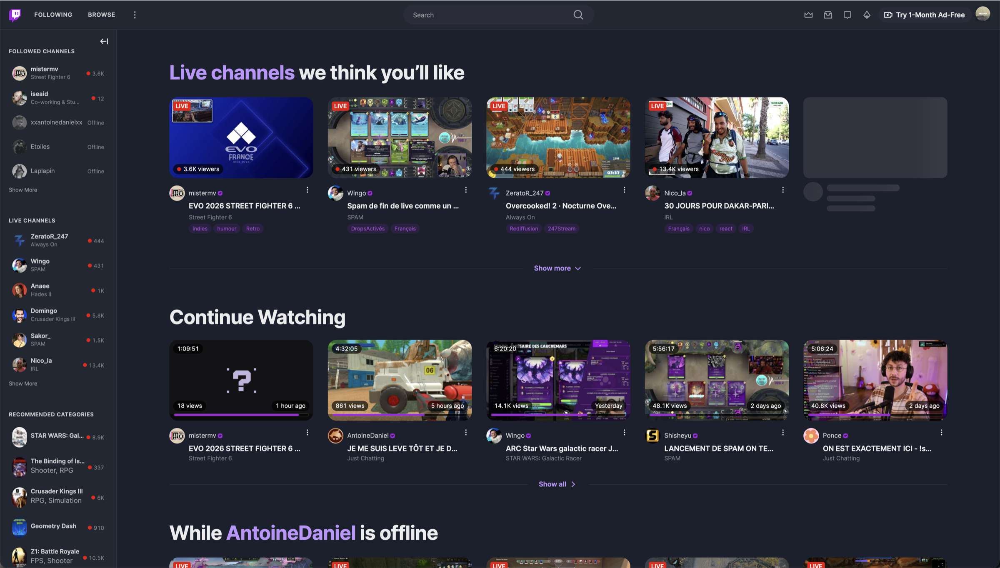

Restyle for Twitch is a Chrome extension that quiets the noisy parts of twitch.tv and gives the content more room. Nothing is added, nothing works differently.

Smaller rows, small-caps headers and right-aligned viewer counts. No stories, no hover cards.
No autoplaying carousel on the home page. Large shelf titles, rounded thumbnails, streamer names first.
The player is inset and rounded, with the stream information in a centred column below it.
Muted messages that return to full contrast on hover, and a soft fade at the top.
Borders instead of shadows, and a dimmed backdrop behind dialogs.
Pick an accent colour, a background colour and a spacing density. Sidebars and text adapt to the background.
chrome://extensions and turn on Developer mode.The extension is not on the Chrome Web Store yet. It needs Chrome 120 or later.
The extension only runs on twitch.tv. It collects nothing and sends nothing anywhere. Its one permission is used to remember your settings.